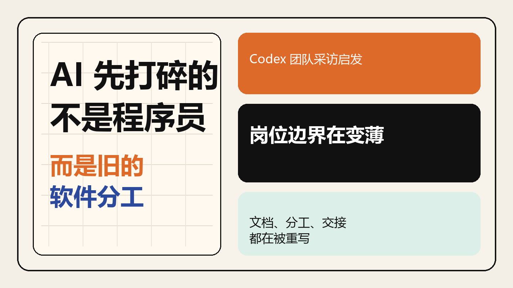
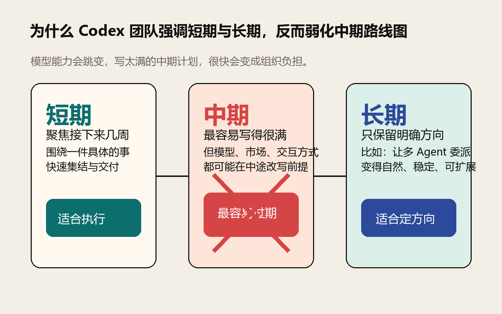
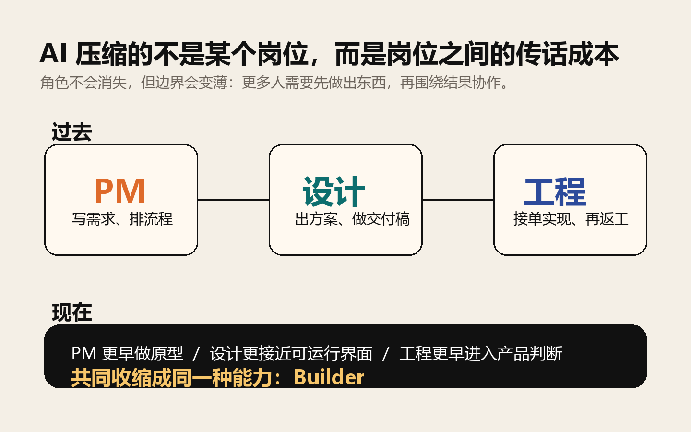
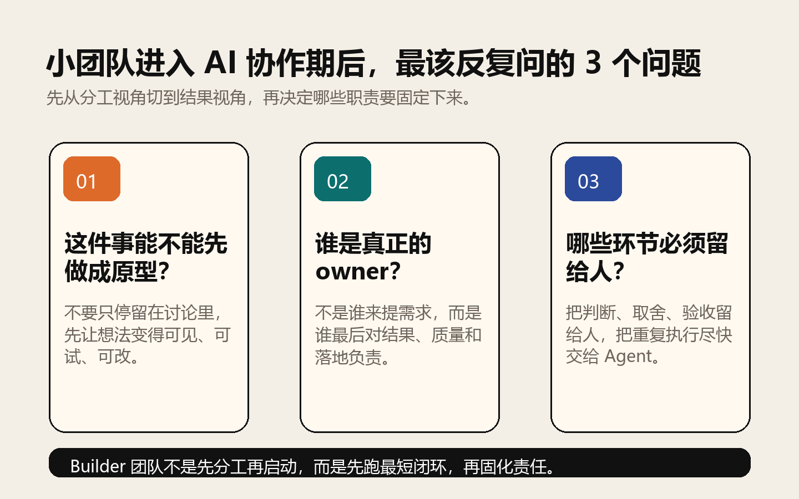

听完 Codex 团队这场采访，我更确定了：AI 先打碎的不是程序员，而是旧的软件分工

导读
这不是一篇采访纪要，而是一篇关于 AI 时代软件团队工作方式变化的拆解。
如果你关心中期路线图为什么会失效、岗位边界为什么会变薄，以及小团队以后该怎么组织协作，这篇值得读完。
最近看完一篇关于 Codex 团队的采访，我原本以为会看到很多产品细节、功能花絮，或者 OpenAI 内部怎么用工具的“内幕”。但越往下看，我越觉得，这篇采访真正有价值的地方，不是它讲了多少 Codex，而是它提前剧透了一种新的软件团队工作方式。
我的判断很直接：
AI 先打碎的，不是程序员这个职业本身，而是软件团队里那层厚重的岗位分工、文档链路和协作节奏。
如果你是程序员、设计师、PM，或者你正带一个小团队做产品，这篇采访里至少有 3 个特别值得带走的信号：为什么 OpenAI 几乎不做中期规划，为什么设计师现在写的代码比半年前的工程师还多，以及为什么越来越多团队真正稀缺的，不再是“谁负责哪一段”，而是“谁能直接把事做成”。
1. OpenAI 为什么几乎不做中期规划
采访里最让我印象深的一句话，是 Codex 产品负责人 Alexander 提到：在 OpenAI，短期计划和长期方向都很重要，但中期路线图反而经常不做。
这件事如果放在传统软件团队里，听起来几乎像反常识。很多团队最熟悉的动作，恰恰就是先拉季度 roadmap、再拆月度计划、再层层对齐资源。
但 AI 产品不是这个节奏。因为模型能力不是线性进步，而是经常在某个时间点突然跨过临界线。原来做不了的任务，下一版模型突然就能做了；原来必须靠人补齐的流程，下一版模型突然就能接过去。这个时候，写得太满的中期规划，反而会变成负担。

所以他们的做法更像是：短期只盯住接下来几周要完成的一件具体事情，长期只盯住一个明确方向，比如“让多 Agent 委派变得自然”，而中间那层容易过期的路线图，能少就少。
这背后的核心不是不规划，而是少把组织精力浪费在很快会过期的规划上。
对普通团队的提醒：很多时候拖慢我们的，不是能力不够，而是太早把未来三个月写死了，结果每次环境一变，前面的对齐成本全部沉没。
2. 文档没有消失，但角色被重新定义了
采访里还有一个很具体的细节：Codex 团队平时写文档非常少。Alexander 的原话大意是，只有当一个问题已经大到装不进一个人的脑子，或者真的需要多人协同时，他们才会写文档，而且通常也很短。
这不是因为他们不重视思考，而是因为很多原来要靠文档传递的东西，现在可以先靠原型、代码探索和 Agent 协作跑一遍。
Romain 在现场演示了 Codex 的计划模式。你提出一个模糊方向，Codex 先去看代码、看上下文、提出问题、生成计划；人再在这个过程中不断加判断。Alexander 也提到，他经常会先让 Codex 帮自己把一个模糊问题想清楚，哪怕最后那段代码不一定直接上线，这个过程也能帮他形成更好的心理模型，再去和工程师讨论。
这意味着很多过去靠长文档完成的事，现在开始变成：先探索，再收敛，最后只把必须对齐的东西写下来。
文档并没有失效，失效的是那种“先写厚文档，再等别人照着做”的默认流程。
3. AI 压缩的不是岗位，而是岗位之间的传话成本
这场采访里最有冲击感的一句，可能是：Codex 团队的设计师现在写的代码，比半年前一个工程师写的还多。
这句话之所以重要，不是因为设计师突然都要转工程师，而是因为它说明了一件更大的事：岗位边界正在变薄。
以前的链路通常是这样的：PM 写需求，设计师出方案，工程师实现，再一轮轮评审、打回、解释、返工。现在这条链路正在被压缩。
设计师可以直接把界面原型推进到更接近可运行的状态；PM 可以用 Agent 先把一个想法做成可讨论的版本；工程师不再只是“接单实现”，而是更早进入产品判断。真正被压缩掉的，是中间那层不断转译、不断等待、不断传话的成本。

这也是为什么 Alexander 会说，很多团队其实不再需要那么多传统意义上的 PM。不是因为产品判断不重要了，恰恰相反，而是因为纯粹负责转述、协调、排流程的人，会先被压缩；真正对问题负责、能推进结果的人，会变得更重要。
我特别认同他们在采访里反复提到的那个词：builder。以后更有竞争力的团队，不一定是岗位分得最清楚的团队，而是让更多人具备“直接上手把事情往前推”的能力。
4. Codex App 的意义，不只是一个新工具
采访里还有一个很值得琢磨的点：为什么 Codex 最后会做出 App，而不是只停留在 CLI 或 IDE 插件里？
他们给出的答案其实非常清楚。因为当模型开始能稳定地接更长任务、并行跑更多任务时，旧的交互界面已经不适合了。你当然可以在终端里开很多窗口，但对大多数人来说，那不是自然的工作方式。
所以 Codex App 本质上不是“再做一个壳”，而是在给“多 Agent 委派”找一个更符合人类直觉的界面。
当底层能力发生变化时，真正的机会往往不是多加几个按钮，而是重写一层新的默认交互。
他们在产品上的两个判断也很值得记住：高级用户需要高度可配置性，但产品本身不能挡住模型发挥。做得太硬核，新手用不了；做得太傻瓜，高手又嫌被绑住。Codex 的做法是，表面保持简单，深处保留能力，把复杂度逐层展开，而不是一上来把所有开关堆在用户脸上。
5. 小团队以后该怎么组织工作
Alexander 在采访里说了一句我很喜欢的话：每个问题仍然需要一个负责人，但那个负责人不一定必须挂着 PM 的头衔。
这句话其实把很多争论都讲透了。AI 时代当然还需要产品判断，也仍然需要用户洞察、优先级取舍、节奏控制。但这些能力开始从一个单独岗位，扩散成团队里的通用能力。
所以对小团队来说，真正该问的问题不是“我们还要不要 PM”，而是下面这 3 个：

- 这个问题现在能不能先被做成一个原型，而不是只停留在讨论里？
- 这件事最后谁对结果负责，而不是谁负责提需求？
- 哪些环节必须留给人判断，哪些环节应该尽快交给 Agent？
我把它叫做：Builder 团队三问。这个框架的价值在于，它能帮团队从“分工视角”切到“结果视角”。以前我们太容易先想清楚谁做什么，再开始做；以后更有效的方式，可能是先跑出最短闭环，再决定哪些职责需要固定下来。
6. 招人标准也在变
采访最后一个让我很有感触的部分，是他们聊招人。无论是 Alexander 还是 Romain，都反复提到一个词：agency，也就是能动性。
他们看重的不是“加入后给你 12 个任务，你能不能按顺序做完”，而是“给你一个模糊问题，你能不能自己把事情往前推”。他们也明确说，自己并不太在意候选人出身于哪所大学，反而更愿意点开对方做过的作品、开源项目和公开表达。
这背后其实还是同一个判断：AI 降低了执行门槛之后，最值钱的不是“我懂很多”，而是“我能把模糊变成结果”。
7. 最后，压缩成一句判断和 5 个动作
如果只能带走一句话，我会带走这句：
AI 先打碎的不是程序员，而是软件团队里那层默认存在的旧分工。
如果要把它落成可以立刻开始做的动作，我会建议从这 5 条开始：
- 少写会很快过期的中期路线图，把精力放回短期交付和长期方向。
- 少做纯转述型协作，让 PM、设计、工程都更早进入原型和验证。
- 少把文档当起点，多把文档当收敛结果，只记录必须对齐的部分。
- 少按岗位评估人，多按能不能把事做成、能不能拿反馈迭代来评估。
- 少把 AI 当聊天工具，多把它当团队协作系统的一部分。
如果你最近也在思考：AI 到底会先改变什么，我的答案已经越来越清楚了。它当然会改变写代码，但它更早改变的，是谁来定义问题、谁来跑原型、谁来做判断、谁来对结果负责。
来源说明
本文基于玉澄整理的 Codex 团队采访内容写成，重点提炼其中关于组织方式、角色变化和团队协作的判断。
原视频链接：https://www.youtube.com/watch?v=9qXc-THAvc0